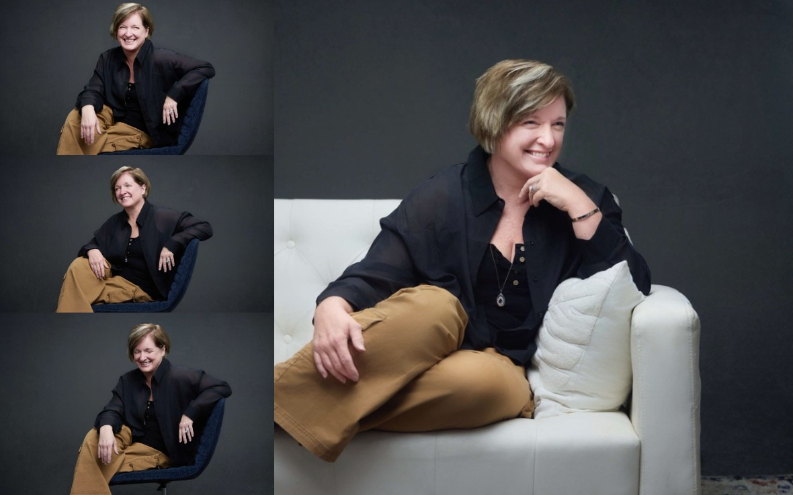

Leigh Witherell
A Contemporary Figurative artist

Leigh Witherell is a contemporary figurative artist whose practice explores the emotional architecture of grief, intimacy, sensuality, and human vulnerability. Originally shaped by her upbringing in small town Texas and now based in Philadelphia, Witherell's work occupies the space between emotional realism and figurative expression, using the human form not simply as subject, but as a vessel for memory, resilience, and the often unspoken complexities of lived experience.
Working primarily in acrylic on canvas, Witherell creates deeply personal visual narratives that examine both the fragility and endurance of the human spirit. Her artistic evolution was profoundly reshaped by the loss of her daughter in 2021, a life altering event that transformed her creative practice into an act of witnessing, healing, and emotional excavation. Rather than approaching grief as an endpoint, Witherell's work investigates how loss continues to exist within the body, relationships, and memory, becoming a sustained dialogue between absence and presence.
A distinctive dimension of her practice lies in her experience with aphantasia, the inability to voluntarily visualise mental imagery. This neurological difference informs her creative process in significant ways, requiring her to navigate painting through instinct, emotional resonance, and external reference rather than internal visual recall. The result is a body of work that feels psychologically charged, intimate, and deeply felt, offering a rare perspective on perception, embodiment, and artistic translation.
Witherell's paintings often centre on themes of melancholy, sensuality, femininity, and emotional tension, positioning her work within wider contemporary conversations surrounding vulnerability, female interiority, neurodivergent creativity, and the therapeutic potential of art. Her practice resists spectacle, instead drawing viewers into quieter but deeply affecting spaces where emotion is neither hidden nor simplified.
Her work has received international recognition through exhibitions across the United States and Europe, alongside features in publications including Artist Talk Magazine, Influx Magazine, Novum Artis, Art in Orbit, and Contemporary Art Curator Magazine. She is also the recipient of honours including the NY Resilience Award: Healing Through Art and the Woman Art Award from MUSA.
As an artist, Leigh Witherell represents a compelling contemporary voice whose work offers both personal testimony and broader cultural relevance, engaging with some of the most urgent emotional and psychological conversations of our time.
Curriculum Vitae
Loading curriculum vitae...
Press
Podcasts
The Transformative Power of Art
Digital Journal
551 - Leigh Witherell
ArtByArtists
Articles
Review: Nude Nite in St. Petersburg — Art, Atmosphere, and the Human Form
The Artisan Magazine
Painting the Spaces Culture Tries to Ignore
Cultural Dose
Most Inspiring Women Artists of 2025
Art HerStory Magazine
Featured Profile
PJAS Print Hub
An Inspired Chat with Leigh Witherell
Bold Journey
Painting the Quiet Conversations of the Human Soul
Hinton Magazine
Educating Through The Invisibility Project
Daily Scanner
Leigh Witherell vs. the Algorithm
Tech News Vision
Every Life Is a Story
Big Time Daily
Stand for Artistic Freedom
LA Lifestyle Magazine
Dynamic Brush Work & Raw Emotion
Opulence Magazine
Top 20 Inspirational Women To Look Out For In 2025
NY Weekly Magazine
The Art of Feeling Seen and Understood
Arts to Hearts Project
Meet Leigh Witherell
Bold Journey
Featured Artist
ArtTour International Magazine
Meet Leigh Witherell
Canvas Rebel
Soulful Narratives: The Poignant Artistry
Art Tour International
Artist Leigh Witherell Paints the Many Faces of Grief
Everything Brevard
Profile: Leigh Witherell
Artist Talk Magazine
Profile: Leigh Witherell
Influx Gallery
Artwork Publications
Artbox Publish - Artbook 2024
Hardcover
ArtTour International Magazine
Pages 56–57
Art Loving Magazine
Issue 2, pages 50–52
Artistcloseup Magazine
Issue #23 (October), #20 (July), #16 (March)
Artist Talk Magazine
London Underground Book 2024 (hardcover)
Times Square Digital Exhibition Book 2023 (hardcover)
Frequent contributor in issues 36, 33, 32, 31, 30, 28, 27, 25, 24, 22 and 21.
Novum Artis Magazine
Issue 004 (August), 003 (June), 002 (April)
Circle Foundation - ArtIDEAL Volume 4
Hardcover, page 107
Contemporary Art Curator Magazine
Issue 2, pages 3 and 144–145
Observica Magazine
Issue 27 (SE 2024), Issue 25 (EE 2023)
Artistonish Magazine
Issue 44 (March 2024), Issue 39 (October 2023), Issue 32 (March 2023)